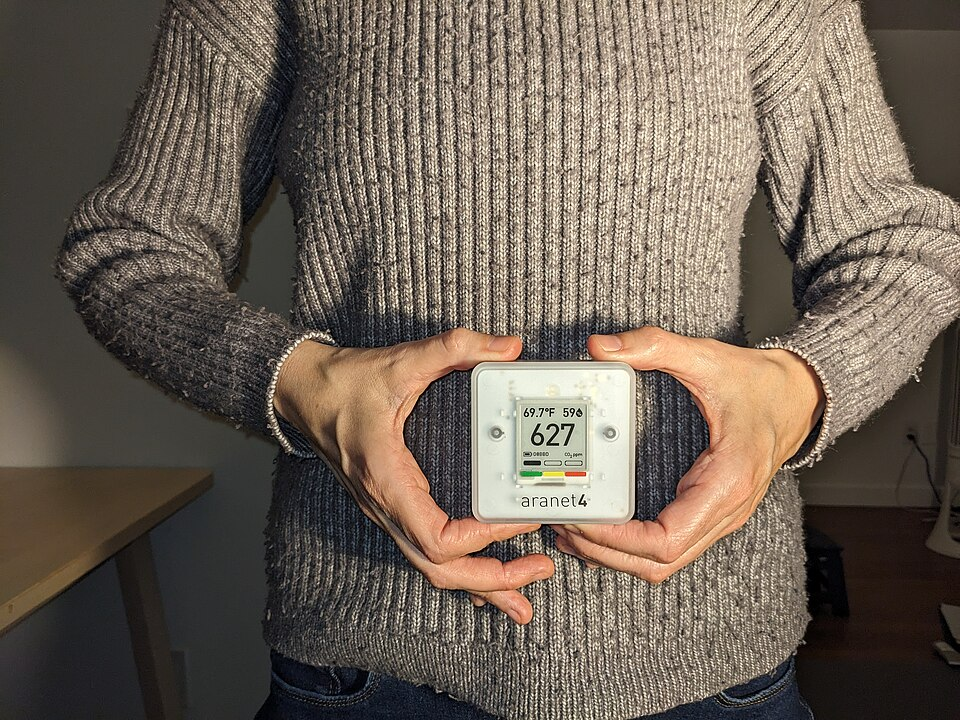
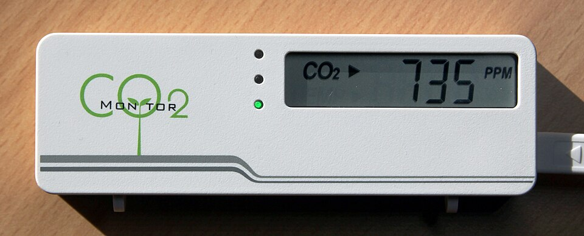

Check a room CO₂ sensor against a second meter
Log a room's behaviour and separate placement, drift and point mapping before adjusting calibration.
Identify what the device measures
Room combinations can report temperature, relative humidity and actual CO₂ in ppm, sometimes alongside a VOC or particle measurement. Find which model is installed and which measured quantities it sends by an analogue output or network point. A true CO₂ device may use non-dispersive infrared (NDIR) or a photoacoustic measurement. A device labelled eCO₂ can instead estimate a CO₂-equivalent from other sensing. The readings serve different purposes. T45 · CO₂, units, placement and calibration.

Photo by Foonarres, Wikimedia thumbnail, with on-page callouts. Original photo · CC0.


Photo by Morn, Wikimedia thumbnail, with on-page callouts. Original photo · CC BY-SA 4.0.

Watch Aranet’s CO₂ and humidity walkthrough. Locate each measured quantity before trying to interpret a reading taken in a room. Aranet’s CO₂ and humidity walkthrough on YouTube.
Run a side-by-side check
Use one real CO₂ monitor with recent calibration information if you can borrow it. A second compatible meter allows a comparison. Set both together at a representative room position where people will not breathe directly into the sensor and supply air will not blow across it. Follow both manufacturers' warm-up times and placement instructions.
At five-minute intervals for at least 30 minutes, record time, both displayed ppm values, temperature, relative humidity if available, occupancy and whether the window or ordinary ventilation state changed. Mark missing readings. Change one ordinary room condition only when permitted. Take measurements during normal use. Do not confine people or restrict ventilation for the exercise.
Compare values at matched timestamps after the devices have settled. Compare against the stated accuracy and response time of both units. One lower reading near a supply grille can be a placement issue. A disagreement that persists in a side-by-side stable test is stronger evidence for inspection or calibration.
Where a local display is available on a 0–2000 ppm, 0–10 V analogue sensor, 800 ppm corresponds to 4 V. A controller mistakenly treating that 4 V as 0–5000 ppm would display 2000 ppm. Check input type, common and scaling before recalibrating. Practise model-specific I/O in P63. For a BACnet sensor check device, object, units and when it last updated. P38 BACnet point checks.
Read the trend before intervening
If you lack a monitor, work a paper case. At 09:00, the co-located meters read 620 and 640 ppm. At 09:20 they read 875 and 905 ppm, while the BMS still displays 625 ppm with a 09:00 update time. Compare the two live readings and decide which value is stale. With both meters rated ±50 ppm at those concentrations, their 30 ppm difference at 09:20 can fit their combined tolerances.
| Synthetic observation | Next check |
|---|---|
| Two nearby meters rise during normal occupancy and fall when the room clears | Record the occupancy and ventilation state. Compare agreed reference data under similar conditions. |
| Wall sensor is low near a supply grille but agrees in a side-by-side test at a common position | Check mounting position against the design. Review airflow at the sensor with the responsible technician. |
| Local display and reference follow the room while the BMS point stays fixed | Check update time, comms quality, object identity or the analogue input signal. A stale value can still look plausible. |
CO₂ can help assess ventilation under documented conditions. It does not measure airborne particles or all contaminants. A model's automatic baseline correction may assume regular exposure to a known low-CO₂ baseline. Read its procedure before changing any calibration setting or using outdoor air as a reference. NIOSH ventilation and CO₂ guidance · Sensirion SCD30 field calibration.
Save the model, comparison placement, timestamps and one annotated trend. Write which readings agree within the expected tolerance and which comparison would justify the next action.